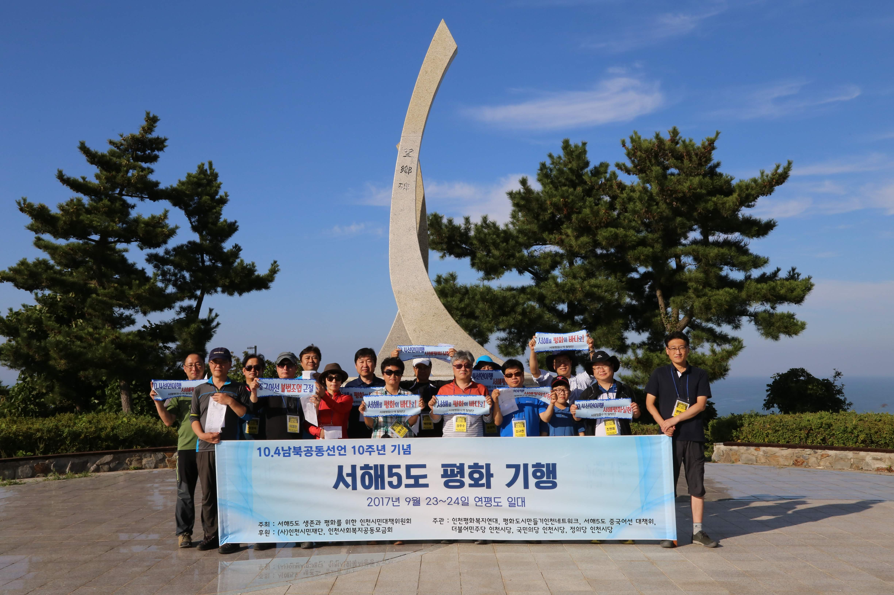

[5극3특 해양주권③] 남북 경계 미확정이 중국에 틈을 준다
북·중은 압록강 하구 영해선만 그어, 배타적경제수역은 미획정
유엔해양법협약 제121조, 암석은 배타적경제수역 가지지 못해
한중 공식회담 2019년이 마지막, 연내 개최 합의 아직 미이행
서해는 두 나라 바다가 아니다. 대한민국과 북한과 중국 수역이 겹친다. 남북 경계가 없는 자리에서 무슨 일이 벌어지는지 사실로 짚는다.

1. 서해는 세 나라가 겹치는 바다다
한국과 중국은 1996년 유엔해양법협약 당사국이 되고 200해리 배타적경제수역을 설정했다. 서해는 가장 넓은 곳도 400해리에 못 미쳐 두 나라 권원이 겹친다. 여기에 북한 수역이 더해져 서해 북부는 세 나라 주장이 겹친다.
섬이 그 다툼의 근거가 된다. 협약 제121조 제2항은 섬의 영해와 배타적경제수역과 대륙붕을 다른 영토에 적용하는 규정에 따라 정한다고 적었다. 다만 제3항은 인간이 거주할 수 없거나 독자적인 경제활동을 유지할 수 없는 암석은 배타적경제수역이나 대륙붕을 가지지 못한다고 못박았다.
이 조항은 실제로 쓰였다. 상설중재재판소는 2016년 7월 12일 필리핀과 중국 사건에서 스프래틀리 제도 고조시 노출 지형을 모두 제3항의 암석으로 보고, 가장 큰 타이핑다오까지 권원을 인정하지 않았다. 인천이 확정한 무인도 157개가 어느 쪽에 설지는 아직 가려지지 않았다.
2. 북·중은 영해까지만 그었다
북한과 중국은 1962년 10월 12일 평양에서 조중변계조약에 서명하고 1964년 3월 20일 의정서를 붙였다. 두 문건은 백두산과 압록강과 두만강 국경만 다루지 않았다. 의정서 제12조는 압록강 강해경계선의 한 점에서 두 점을 지나 공해에 이르는 선을 좌표로 표시했다.
거기까지다. 그 선은 영해 경계이고 배타적경제수역과 대륙붕 경계는 아직 없다. 두 문건은 북한과 중국 정부가 공표한 적이 없어, 국내에는 이종석이 2000년에 낸 『북한-중국관계 1945-2000』을 거쳐 조문이 알려졌다.
양국은 1997년 해양법 비공식 협의체를 만들고 2000년 뒤로 네 차례 협의했으나 합의에 이르지 못했다. 중국은 형평 원칙을 내세우고 북한은 위도 이등분선을 고수한다. 엇갈리는 미획정 수역을 3000㎢ 넘게 보는 견해도 있다.
북한이 따로 그은 선은 있다. 1977년 6월 21일 200해리 경제수역을 선포해 그해 8월 1일 발효시켰다. 같은 날 조선인민군 최고사령부는 군사경계선을 동해 50해리, 서해는 경제수역 경계선까지로 선포했다.

3. 조업권이 오가는 회색지대
경계가 없는 수역에서 조업권이 거래된다. 유엔 안전보장이사회는 2017년 8월 결의 제2371호 제9항으로 북한 수산물 수출을 전면 금지했다. 그해 12월 결의 제2397호 제6항은 그 금지가 조업권의 직간접 판매와 이전에도 미친다는 점을 확인했다.
감시하던 눈은 사라졌다. 대북제재위원회 전문가패널은 2024년 3월 28일 러시아 거부권으로 임기 연장이 무산돼 그해 4월 30일 임무가 끝났다. 북한 조업권 거래를 공식 문서로 짚어 온 유엔 기구는 그 뒤로 없다.
단속은 남북 대치 구조에 막힌다. 정부는 2026년 8월 27일 외교부와 통일부와 국방부와 해양수산부와 해양경찰청 이름으로 서해 북방한계선 불법조업 대응 방안을 냈다. 8월 11일 단속세력 31척을 투입해 중국 어선 8척을 나포하고 24척을 퇴거시켰다.
4. 미획정 수역에 들어선 구조물
중국은 잠정조치수역에 구조물을 세웠다. 2018년 선란 1호, 2022년 석유시추선을 개조한 관리 플랫폼, 2024년 선란 2호다. 세 기 모두 중간선 기준 중국 쪽에 있고 중국은 선란 1·2호를 연어 양식시설이라고 설명한다.
2001년 발효한 한중어업협정에는 구조물을 다루는 조항이 없다. 협정 제14조는 어떤 규정도 해양법상 제반 사안에 관한 각 체약당사자 입장을 저해하는 것으로 해석되어서는 안 된다고 적었다. 제7조 제3항은 잠정조치수역에서 각자 자기 나라 어선만 관리하고 상대 어선에는 관리 조치를 취하지 않는다고 정했다.
일부는 옮겨졌다. 중국 산둥 해사국은 2026년 1월 26일 항행경고를 내고 웨이하이항 예인을 알렸고, 외교부는 2월 3일 관리시설의 잠정조치수역 밖 이동이 완료됐다고 밝혔다. 선란 1호와 2호는 남았고, 양식시설 12개를 더 놓는다는 중국 계획은 추진되지 않으리라는 관측이 나온다.
5. 통킹만이 남긴 것
선례는 남쪽에 있다. 베트남과 중국은 2000년 12월 25일 베이징에서 통킹만 해양경계획정 협정에 서명하고 2004년 6월 30일 발효시켰다. 좌표점 21개로 영해와 배타적경제수역과 대륙붕 경계를 한꺼번에 그었다.
배분은 해안선 길이를 따라갔다. 베트남 정부는 자국 해안선을 763㎞, 중국을 695㎞로 잡고 전체 수역의 53.23%를 얻었다고 밝혔다. 중국 외교부는 백분율을 내놓지 않고 양측이 얻은 면적이 대체로 비슷하다고만 했다.
통킹만은 두 나라가 마주 앉은 자리였다. 서해에서 외교부 제2차관이 수석대표로 나선 한중 공식회담은 2015년과 2019년 두 차례가 전부다. 위성락 청와대 국가안보실장은 2026년 1월 5일 정상회담 결과를 알리며 연내 차관급 공식회담을 열 수 있게 함께 노력하기로 했다고 밝혔다.
그 합의는 아직 이행되지 않았다. 2026년 5월 7일 청두에서 제15차 국장급 회담이 열렸을 뿐이다. 8월 19일 왕이 중국 외교부장 방한 때도 조현 외교부 장관이 서해 문제 등에 원칙적 입장을 전달했다고만 발표됐고, 9월 2일까지 외교부가 알린 차관급 공식회담은 없다.
서해에는 마주 앉아야 할 상대가 둘이다. 그 가운데 하나와는 아직 선을 그을 자리조차 만들지 못했다.
※ 이 기사는 AI 프로그램 클로드를 활용해 작성했습니다.
#서해해양경계 #조중변계조약 #유엔해양법협약121조 #배타적경제수역 #잠정조치수역 #선란1호 #통킹만협정 #한중해양경계획정 #서해5도 #남북경계
참고문헌
·유엔해양법협약(1996), "해양법에 관한 국제연합협약", 다자조약 제1328호, 1996.2.28 발효. https://www.law.go.kr/LSW/trtyInfoP.do?mode=4&trtySeq=2274
·대한민국·중화인민공화국(2001), "대한민국 정부와 중화인민공화국 정부간의 어업에 관한 협정", 조약 제1567호, 2001.6.30 발효. https://www.law.go.kr/LSW/trtyInfoP.do?mode=4&trtySeq=1078
·유엔 안전보장이사회(2017), "Resolution 2371 (2017)", S/RES/2371, 2017.8.5. https://unscr.com/en/resolutions/doc/2371
·유엔 안전보장이사회(2017), "Resolution 2397 (2017)", S/RES/2397, 2017.12.22. https://unscr.com/en/resolutions/doc/2397
·유엔 해양법률해양문제국(1977), "Decree by the Central People's Committee establishing the Economic Zone of the People's Democratic Republic of Korea", 1977.6.21. https://www.un.org/depts/los/LEGISLATIONANDTREATIES/PDFFILES/PRK_1977_Decree.pdf
·상설중재재판소(2016), "The South China Sea Arbitration (The Republic of the Philippines v. The People's Republic of China)", PCA Case No. 2013-19, 2016.7.12. https://pcacases.com/web/sendAttach/1801
·베트남·중화인민공화국(2000), "Agreement on the Delimitation of the Territorial Seas, Exclusive Economic Zones and Continental Shelves in the Beibu Gulf/Bac Bo Gulf", 2000.12.25 서명. https://cil.nus.edu.sg/wp-content/uploads/2017/08/2000-Agmt-between-China-and-Vietnam-on-Delimitation-of-Territorial-Seas.pdf
·중화인민공화국 외교부(2004), "中越北部湾划界协定和渔业合作协定生效", 2004.7.30. https://www.mfa.gov.cn/web/ziliao_674904/tytj_674911/tyfg_674913/200407/t20040730_7949479.shtml
·외교부(2026), "한·중 해양경계획정 제15차 국장급 회담 개최(5.7.)", 2026.5.7. https://www.mofa.go.kr/www/brd/m_4080/view.do?seq=377181
·외교부(2026), "한중 외교장관 회담 및 만찬 결과", 2026.8.19. https://www.mofa.go.kr/www/brd/m_4080/view.do?seq=377504
·외교부·통일부·국방부·해양수산부·해양경찰청(2026), "정부, 서해 북방한계선(NLL) 불법조업 외국어선 대응 방안 발표", 2026.8.27. https://www.mofa.go.kr/www/brd/m_4080/view.do?seq=377518
·청와대(2026), "한중 정상회담 일정 등 관련 위성락 국가안보실장 브리핑", 2026.1.5. https://www.president.go.kr/briefings/mq7evBz8
·Huaigao Qi(2020), "Maritime Delimitation Between China and North Korea in the North Yellow Sea", Ocean Development & International Law, 51(4), 316-338. https://www.tandfonline.com/doi/full/10.1080/00908320.2020.1830506
·Choon-ho Park(1978), "The 50-Mile Military Boundary Zone of North Korea", American Journal of International Law, 72(4), 866-875. https://www.cambridge.org/core/journals/american-journal-of-international-law/article/div-classtitlethe-50-mile-military-boundary-zone-of-north-koreadiv/111417221EB6C214E8EBD3D559C3F5D4
·이종석(2000), 『북한-중국관계 1945-2000』, 중심. 온라인 URL 없음
·송윤서(2026), "외교부 '中 서해 관리시설, 잠정조치수역 밖으로 이동 완료'", 『아주경제』, 2026.2.3. https://www.ajunews.com/view/20260203135953202
·이혜미(2026), "중국 '서해 구조물 일부 이동 중'… 선란 1·2호 아닌 관리 플랫폼", 『한국일보』, 2026.1.27. https://www.hankookilbo.com/news/article/A2026012717160005259